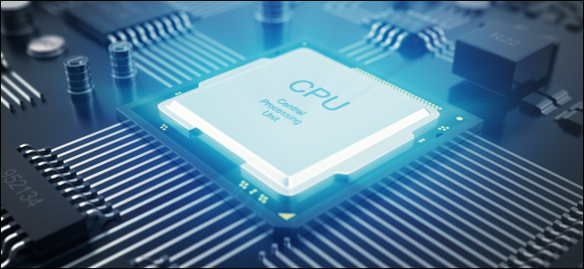
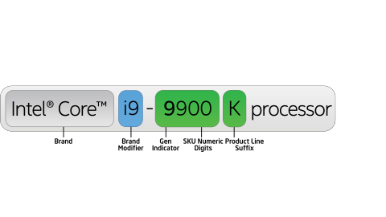

中央處理器 Central Processing Unit
中央處理是電腦的主要裝置之一，功能主要是解釋電腦指令以及處理電腦軟體中的資料器。 電腦的可程式化性主要是指對中央處理器的編程。 1970年代以前， 中央處理器由多個獨立單元構成， 後來發展出由積體電路製造的中央處理器， 這些高度收縮的元件就是所謂的微處理器， 其中分出的中央處理器最為複雜的電路可以做成單一微小功能強大的單元。
https://zh.wikipedia.org/wiki/%E4%B8%AD%E5%A4%AE%E5%A4%84%E7%90%86%E5%99%A8;
多核心
多核心中央處理器是在中央處理器晶片或封裝中包含多個處理器核心，以偶數為核心數目較為常見，一般共用第二級快取。現今使用雙核心和四核心以上處理器的個人電腦已相當普遍。另也有少數三核心、六核心、八核心、十核心處理器等。
效能
CPU的效能和速度取決於時脈速率和每週期可處理的指令，兩者合併起來就是每秒可處理的指令（IPS）。IPS值代表了CPU在幾種人工指令序列下「高峰期」的執行率，指示和應用。而現實中CPU組成的混合指令和應用，可能需要比IPS值顯示的，用更長的時間來完成。而記憶體層次結構的效能也大大影響中央處理器的效能。通常工程師便用各種已標準化的測試去測試CPU的效能，已標準化的測試通常被稱為「基準」（Benchmarks）。如SPECint，此軟仵試圖類比現實中的環境。測量各常用的應用程式，試圖得出現實中CPU的績效。
市面上常見規格
Intel
Core i9: Core i7衍生的高階處理器，一般因價格過於昂貴，不推薦此類處理器，但若有架站需求，可以考慮購買
Core i7: 高階處理器，若有大量程式設計或影片剪輯需求，推薦購買此類處理器
Core i5: Core i7衍生的中階處理器，一般在市面上最常見，同時能應付正常文書、影音、微量剪輯影片及輕度電競需求，非常推薦購買此類處理器
Core i3: 中低階處理器，可應付日常文書、影音及輕度線上遊戲，若有預算上的限制，建議購買
Pentium: 低階處理器，可應付日常文書處理及輕量影音，由於價格便宜，通常用於各種服務機具，若無此需求，不建議購買
Celeron: 入門及處理器，一般由於性能過低，非常不建議購買
AMD
主要以Ryzen系列為優先考量，由於AMD的處理器並沒有內建顯示卡(內顯)，因此需另外購買獨立顯卡(獨顯)，但價格相對也比Intel便宜，不過性能也不輸給Intel，因為增添了選購顯示卡的彈性，此類處理器常會搭配電競級顯卡
處理器編號

以上圖為例，Intel Core是指此處理器品牌，i9是指處理器規格，之後通常會接著四個數字，第一個數字是指此處理器的世代，之後三個數字則是指產品線，不過簡單來講，由左至右來看，數字越大，性能越好，最後有時會加上一個英文字母，以八代以上的處理器來看分別是K、KF、G、U，也分別指不鎖頻，需要獨立顯卡，套件包含獨立顯示卡以及超低功耗
CPU腳位
購買處理器時應注意CPU和主機板的腳位是否一致，若不同就無法相容，就和USB插不進兩孔插座一樣的道理，但也因為此問題，現在的CPU開始走向統一的腳位